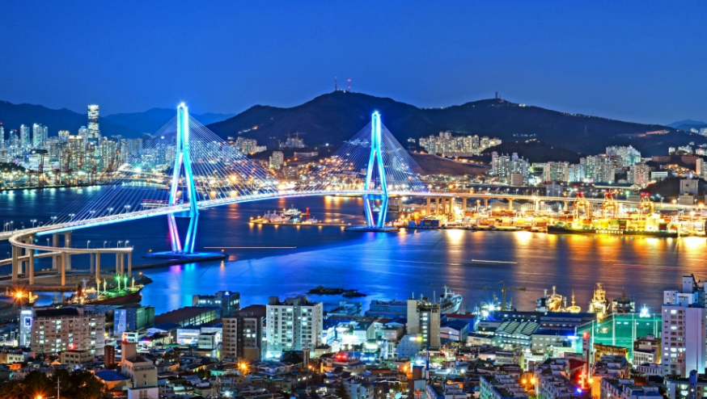

가덕도신공항 건설 본격화…부산 서부권 개발 기대감 높아져

부산 미래를 바꿀 핵심 인프라
가덕도신공항은 부산 강서구 가덕도 일원에 조성되는 동남권 관문공항 사업이다. 부산·울산·경남의 항공 수요를 담당하고 수도권에 집중된 항공·물류 기능을 분산할 핵심 기반시설로 평가된다. 정부와 부산시는 신공항을 중심으로 국제 물류 경쟁력을 강화하고 관광객 유입과 지역 균형 발전을 함께 추진한다는 구상을 내놓고 있다.
신공항은 단순히 항공편이 오가는 시설을 추가하는 사업에 그치지 않는다. 공항 접근도로와 철도, 배후 물류단지, 항만 연결망이 함께 구축되면 부산의 도시 구조와 산업 입지에도 상당한 변화가 나타날 수 있다. 특히 부산항과 신공항을 연결하는 해상·항공 복합 물류 체계가 형성될 경우 동북아 물류 거점으로서 부산의 경쟁력을 높이는 계기가 될 수 있다는 전망이 나온다.
왜 가덕도신공항이 필요한가
김해국제공항은 오랜 기간 부산과 동남권의 관문 역할을 해왔지만 도심과 가까운 입지, 운영 시간과 확장성 등의 한계가 꾸준히 거론돼 왔다. 부산·울산·경남의 국내외 항공 수요가 증가하면서 동남권을 대표할 새로운 관문공항이 필요하다는 요구도 이어졌다. 가덕도신공항은 이러한 배경 속에서 추진되는 대규모 국책사업이다.
동남권 주민이 장거리 국제선을 이용하기 위해 수도권 공항으로 이동하는 부담을 줄이고, 부산항과 연계된 물류 수요를 지역에서 직접 처리할 수 있는 기반을 마련한다는 점도 주요 추진 배경으로 꼽힌다. 부산시는 신공항을 향후 수십 년간 지역 경쟁력에 영향을 미칠 핵심 인프라로 보고 있다.
· 부산·울산·경남의 국제선 접근성 개선
· 부산항과 연계한 해상·항공 복합 물류 확대
· 서부산권 교통망과 산업 기반 확충
· 관광객 유입과 숙박·서비스 산업 활성화
· 기업 유치와 신규 일자리 창출
강서구·명지·에코델타시티 개발 기대
가덕도신공항 건설은 부산 강서구를 중심으로 한 서부산권 개발과 밀접하게 연결된다. 명지국제신도시와 에코델타시티 등은 이미 주거·상업·산업 기능이 확대되고 있는 지역으로, 신공항 접근 교통망이 갖춰질 경우 도시 성장 속도가 더욱 빨라질 가능성이 있다.
지역에서는 도로와 철도 등 교통망 개선, 기업과 물류시설 유치, 상업·숙박시설 확대에 대한 기대가 높다. 신공항 배후 지역에 항공·물류·관광 관련 산업이 들어서면 지역 내 일자리와 소비 기반도 함께 커질 수 있다. 다만 개발 기대만으로 단기간에 모든 변화가 나타나는 것은 아니며 실제 효과는 사업 일정과 교통망 구축 속도, 기업 투자 여부에 따라 달라질 전망이다.
지역 경제와 고용에도 파급 효과 기대
지역 경제계는 공항 건설 과정에서 발생하는 건설 수요뿐 아니라 개항 이후 물류, 관광, 숙박, 교통, 서비스 산업으로 효과가 확산될 가능성에 주목한다. 공항과 항만을 동시에 활용할 수 있는 기반이 마련되면 수출입 기업과 물류기업이 부산을 선택할 유인도 커질 수 있다.
국내외 관광객의 접근성이 개선될 경우 해운대와 광안리, 원도심, 북항 등 기존 관광지와 서부산권을 연결하는 새로운 관광 동선도 만들어질 수 있다. 크루즈·항공 연계 관광과 국제회의, 전시·컨벤션 산업에도 긍정적인 효과가 기대된다.

부산항과 신공항의 시너지
부산은 세계적인 항만을 보유하고 있지만 항공 물류 기능은 상대적으로 제한적이라는 평가를 받아왔다. 가덕도신공항이 안정적으로 운영되고 부산항과 연결되는 교통망이 구축되면 고부가가치 화물과 긴급 물류를 해상과 항공으로 연계할 수 있는 환경이 마련될 수 있다.
이는 단순한 화물 운송 편의 개선을 넘어 물류기업과 제조기업, 전자상거래 기업의 투자 유치에도 영향을 줄 수 있다. 항만과 공항, 철도와 도로가 한 지역에서 연결되는 복합 물류 체계는 부산이 국제 물류 허브로 도약하기 위한 중요한 기반으로 꼽힌다.
시민 기대감과 함께 풀어야 할 과제
부산 시민들 사이에서도 가덕도신공항에 대한 관심은 높은 편이다. 국제선 접근성 개선과 서부산권 개발, 신규 일자리 창출에 대한 기대가 이어지고 있으며, 부산이 수도권 중심의 항공 체계에서 벗어나 독자적인 국제 경쟁력을 확보할 수 있을지 주목하는 시선도 많다.
반면 대규모 국책사업인 만큼 안전성, 환경 영향, 사업비와 공사 일정에 대한 면밀한 검토가 필요하다는 의견도 나온다. 해상 매립과 연약지반, 기상 조건 등 공사 과정에서 고려해야 할 요소가 많고, 지역사회와의 소통 및 환경 보전 대책도 중요한 과제로 꼽힌다.
향후 일정에 따라 서부산권 변화 주목
가덕도신공항은 장기간 추진되는 사업인 만큼 실제 개항과 주변 개발 효과가 나타나기까지는 시간이 필요하다. 공항 본체 건설뿐 아니라 접근 교통망, 배후도시와 물류단지 조성이 함께 진행돼야 신공항 효과가 부산 전역으로 확산될 수 있다.
부산시는 가덕도신공항을 부산의 미래 성장동력으로 보고 물류·관광·산업 기반을 함께 확충한다는 계획이다. 향후 사업 진행 상황과 교통망 구축 속도에 따라 강서구와 명지국제신도시, 에코델타시티를 비롯한 서부산권의 도시 구조와 산업 지형에도 적지 않은 변화가 예상된다.